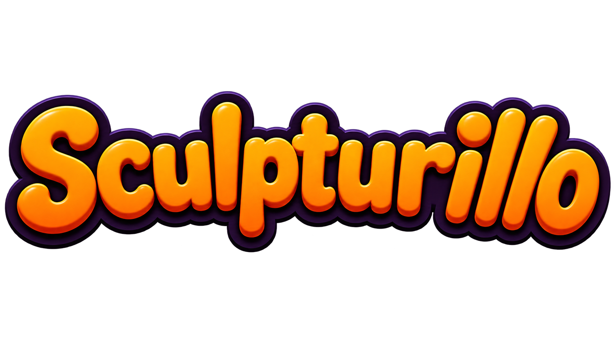

En Sculpturillo podés crear tu propio contenido y compartirlo por el Steam Workshop: otros se suscriben, lo descargan y lo usan en sus partidas. Hoy podés crear bancos de palabras y mapas con su propio escenario.
In Sculpturillo you can create your own content and share it through the Steam Workshop: others subscribe, download it, and use it in their games. Today you can make word banks and maps with their own scenery.
No Sculpturillo você pode criar seu próprio conteúdo e compartilhá-lo pela Steam Workshop: outros se inscrevem, baixam e usam nas partidas. Hoje você pode criar bancos de palavras e mapas com cenário próprio.
In Sculpturillo kannst du eigene Inhalte erstellen und über den Steam Workshop teilen: andere abonnieren sie, laden sie herunter und nutzen sie in ihren Spielen. Heute kannst du Wortbänke und Karten mit eigener Szenerie erstellen.
Dans Sculpturillo, tu peux créer ton propre contenu et le partager via le Steam Workshop : d'autres s'y abonnent, le téléchargent et l'utilisent dans leurs parties. Aujourd'hui tu peux créer des banques de mots et des cartes avec leur propre décor.
In Sculpturillo puoi creare i tuoi contenuti e condividerli tramite lo Steam Workshop: altri si iscrivono, li scaricano e li usano nelle partite. Oggi puoi creare banche di parole e mappe con scenario proprio.
Un banco es un archivo .csv (texto) con una palabra por línea, en los distintos idiomas. Lo abrís con el Bloc de notas o Excel. No necesitás Unreal.
A word bank is a .csv (text) file with one word per line, in the different languages. Open it with Notepad or Excel. No Unreal needed.
Um banco é um arquivo .csv (texto) com uma palavra por linha, nos diferentes idiomas. Abra com o Bloco de Notas ou Excel. Não precisa do Unreal.
Eine Wortbank ist eine .csv-Datei (Text) mit einem Wort pro Zeile, in den verschiedenen Sprachen. Öffne sie mit dem Editor oder Excel. Kein Unreal nötig.
Une banque de mots est un fichier .csv (texte) avec un mot par ligne, dans les différentes langues. Ouvre-le avec le Bloc-notes ou Excel. Pas besoin d'Unreal.
Una banca è un file .csv (testo) con una parola per riga, nelle varie lingue. Aprilo con il Blocco note o Excel. Non serve Unreal.
Formato: una columna por idioma. El juego soporta estos 6: ES,EN,PT,DE,FR,IT (Español, Inglés, Portugués, Alemán, Francés, Italiano).
Format: one column per language. The game supports these 6: ES,EN,PT,DE,FR,IT (Spanish, English, Portuguese, German, French, Italian).
Formato: uma coluna por idioma. O jogo suporta estes 6: ES,EN,PT,DE,FR,IT (Espanhol, Inglês, Português, Alemão, Francês, Italiano).
Format: eine Spalte pro Sprache. Das Spiel unterstützt diese 6: ES,EN,PT,DE,FR,IT (Spanisch, Englisch, Portugiesisch, Deutsch, Französisch, Italienisch).
Format : une colonne par langue. Le jeu prend en charge ces 6 : ES,EN,PT,DE,FR,IT (espagnol, anglais, portugais, allemand, français, italien).
Formato: una colonna per lingua. Il gioco supporta queste 6: ES,EN,PT,DE,FR,IT (spagnolo, inglese, portoghese, tedesco, francese, italiano).
EN, o solo ES,PT).EN, or just ES,PT).EN, ou só ES,PT).EN oder nur ES,PT).EN, ou seulement ES,PT).EN, o solo ES,PT).Ejemplo completo — las palabras traducidas a los 6 idiomas (animales.csv):
Full example — words translated into all 6 languages (animals.csv):
Exemplo completo — as palavras traduzidas nos 6 idiomas (animais.csv):
Vollständiges Beispiel — die Wörter in alle 6 Sprachen übersetzt (tiere.csv):
Exemple complet — les mots traduits dans les 6 langues (animaux.csv) :
Esempio completo — le parole tradotte nelle 6 lingue (animali.csv):
ES,EN,PT,DE,FR,IT Perro,Dog,Cachorro,Hund,Chien,Cane Gato,Cat,Gato,Katze,Chat,Gatto Casa,House,Casa,Haus,Maison,Casa Árbol,Tree,Árvore,Baum,Arbre,Albero Sol,Sun,Sol,Sonne,Soleil,Sole
Ejemplo de un solo idioma (perfectamente válido) — palabras_en.csv:
Single-language example (perfectly valid) — words_en.csv:
Exemplo de um só idioma (perfeitamente válido) — palavras_en.csv:
Beispiel für eine einzige Sprache (völlig gültig) — woerter_en.csv:
Exemple en une seule langue (parfaitement valide) — mots_en.csv :
Esempio in una sola lingua (perfettamente valido) — parole_en.csv:
EN Dog Cat House Tree Sun
.csv → se sube a tu Workshop..csv file → it uploads to your Workshop..csv → ele é enviado ao seu Workshop..csv-Datei → sie wird in deinen Workshop hochgeladen..csv → il est envoyé sur ton Workshop..csv → viene caricato sul tuo Workshop.Al publicar, el juego lee tu CSV y detecta en qué idiomas está (las columnas que tienen palabras) y le pone esas etiquetas de Steam a tu banco — por ejemplo ES, EN — además de la etiqueta WordBank.
When you publish, the game reads your CSV and detects which languages it's in (the columns that have words) and adds those Steam tags to your bank — e.g. ES, EN — on top of the WordBank tag.
Ao publicar, o jogo lê seu CSV e detecta em quais idiomas ele está (as colunas com palavras) e adiciona essas etiquetas da Steam ao seu banco — por exemplo ES, EN — além da etiqueta WordBank.
Beim Veröffentlichen liest das Spiel deine CSV und erkennt, in welchen Sprachen sie ist (die Spalten mit Wörtern) und fügt deiner Bank diese Steam-Tags hinzu — z. B. ES, EN — zusätzlich zum Tag WordBank.
À la publication, le jeu lit ton CSV et détecte dans quelles langues il est (les colonnes remplies) et ajoute ces étiquettes Steam à ta banque — par exemple ES, EN — en plus de l'étiquette WordBank.
Alla pubblicazione, il gioco legge il tuo CSV e rileva in quali lingue è (le colonne con parole) e aggiunge quelle etichette Steam alla tua banca — ad esempio ES, EN — oltre all'etichetta WordBank.
Los mapas te dejan construir tu propio escenario y compartirlo por el Workshop. Se hacen dentro del juego con el Level Creator (la misma mecánica de arcilla), sin programas externos ni Unreal.
Maps let you build your own scenery and share it through the Workshop. You make them inside the game with the Level Creator (the same clay mechanic) — no external tools or Unreal needed.
Os mapas permitem construir seu próprio cenário e compartilhá-lo pela Workshop. Você os faz dentro do jogo com o Level Creator (a mesma mecânica de argila), sem programas externos nem Unreal.
Mit Karten baust du deine eigene Szenerie und teilst sie über den Workshop. Du erstellst sie im Spiel mit dem Level Creator (dieselbe Ton-Mechanik) — ohne externe Programme oder Unreal.
Les cartes te permettent de construire ton propre décor et de le partager via le Workshop. Tu les crées dans le jeu avec le Level Creator (la même mécanique d'argile), sans logiciel externe ni Unreal.
Le mappe ti permettono di costruire il tuo scenario e condividerlo tramite la Workshop. Le crei dentro il gioco con il Level Creator (la stessa meccanica di argilla), senza programmi esterni né Unreal.
El editor tiene un cubo en el centro. El modo cambia solo según dónde apuntes: dentro del cubo modelás una pieza; fuera del cubo editás el nivel (colocás piezas en el escenario).
The editor has a box in the middle. The mode switches automatically depending on where you aim: inside the box you model a piece; outside the box you edit the level (place pieces in the scenery).
O editor tem um cubo no centro. O modo muda sozinho conforme para onde você aponta: dentro do cubo você modela uma peça; fora do cubo você edita o nível (coloca peças no cenário).
Der Editor hat in der Mitte einen Würfel. Der Modus wechselt automatisch je nachdem, wohin du zielst: im Würfel modellierst du ein Teil; außerhalb des Würfels bearbeitest du das Level (platzierst Teile in der Szenerie).
L'éditeur a un cube au centre. Le mode change tout seul selon où tu vises : dans le cube tu modèles une pièce ; hors du cube tu édites le niveau (tu places des pièces dans le décor).
L'editor ha un cubo al centro. La modalità cambia da sola in base a dove punti: dentro il cubo modelli un pezzo; fuori dal cubo modifichi il livello (posizioni i pezzi nello scenario).
1 Agregar, 2 Borrar, Tab formas, clic der. color, 4 ojos, Z/X trazos rectos, rueda tamaño de brocha.1 Add, 2 Erase, Tab shapes, right-click color, 4 eyes, Z/X straight strokes, wheel brush size.1 Adicionar, 2 Apagar, Tab formas, botão dir. cor, 4 olhos, Z/X traços retos, roda tamanho do pincel.1 Hinzufügen, 2 Löschen, Tab Formen, Rechtsklick Farbe, 4 Augen, Z/X gerade Striche, Rad Pinselgröße.1 Ajouter, 2 Effacer, Tab formes, clic droit couleur, 4 yeux, Z/X traits droits, molette taille du pinceau.1 Aggiungi, 2 Cancella, Tab forme, tasto dx colore, 4 occhi, Z/X tratti dritti, rotella dimensione del pennello.1 colocar, 2 borrar, Tab elegir pieza, rueda escala, F panel de ambiente (cielo/luz).1 place, 2 remove, Tab pick a piece, wheel scale, F ambient panel (sky/light).1 colocar, 2 remover, Tab escolher peça, roda escala, F painel de ambiente (céu/luz).1 platzieren, 2 entfernen, Tab Teil wählen, Rad Skalierung, F Umgebungspanel (Himmel/Licht).1 placer, 2 retirer, Tab choisir une pièce, molette échelle, F panneau d'ambiance (ciel/lumière).1 posiziona, 2 rimuovi, Tab scegli un pezzo, rotella scala, F pannello ambiente (cielo/luce).Enter (dentro del cubo). Una línea de luz barre de abajo hacia arriba (como una impresora 3D) mientras se carga.Enter (inside the box). A line of light sweeps from bottom to top (like a 3D printer) as it charges up.Enter (dentro do cubo). Uma linha de luz varre de baixo para cima (como uma impressora 3D) enquanto carrega.Enter (im Würfel). Eine Lichtlinie wandert von unten nach oben (wie ein 3D-Drucker), während es auflädt.Entrée (dans le cube). Une ligne de lumière balaie de bas en haut (comme une imprimante 3D) pendant le chargement.Invio (dentro il cubo). Una linea di luce scorre dal basso verso l'alto (come una stampante 3D) mentre si carica.El pivote es el punto de anclaje (origen) de la pieza: es el punto que se apoya donde la colocás (en el piso, bajo el cursor) y alrededor del cual escala y rota. Un buen pivote hace que la pieza quede derecha y donde esperás.
The pivot is the piece's anchor point (origin): it's the point that rests where you place it (on the ground, under the cursor) and the point it scales and rotates around. A good pivot makes the piece sit straight and where you expect.
O pivô é o ponto de âncora (origem) da peça: é o ponto que se apoia onde você a coloca (no chão, sob o cursor) e ao redor do qual ela escala e gira. Um bom pivô faz a peça ficar reta e onde você espera.
Der Pivot ist der Ankerpunkt (Ursprung) des Teils: der Punkt, der dort aufliegt, wo du es platzierst (auf dem Boden, unter dem Cursor), und um den es skaliert und rotiert. Ein guter Pivot lässt das Teil gerade und dort sitzen, wo du es erwartest.
Le pivot est le point d'ancrage (origine) de la pièce : c'est le point qui se pose là où tu la places (au sol, sous le curseur) et autour duquel elle s'échelonne et tourne. Un bon pivot fait que la pièce se pose droite et là où tu l'attends.
Il pivot è il punto di ancoraggio (origine) del pezzo: è il punto che si appoggia dove lo posizioni (a terra, sotto il cursore) e attorno al quale scala e ruota. Un buon pivot fa sì che il pezzo stia dritto e dove te lo aspetti.
Backspace cancela.Backspace cancels.Backspace cancela.Rücktaste bricht ab.Retour arrière annule.Backspace annulla.Tab abre la paleta: elegí la pieza que cocinaste (o piezas base incluidas).Tab opens the palette: pick the piece you cooked (or the built-in base pieces).Tab abre a paleta: escolha a peça que você cozinhou (ou as peças base incluídas).Tab öffnet die Palette: Wähle das gebackene Teil (oder die enthaltenen Basisteile).Tab ouvre la palette : choisis la pièce que tu as cuite (ou les pièces de base incluses).Tab apre la palette: scegli il pezzo che hai cotto (o i pezzi base inclusi).Rueda para escalar, clic izquierdo para colocar una instancia, 2 (Borrar) para sacar las que toques.Wheel to scale, left-click to place an instance, 2 (Erase) to remove the ones you touch.Roda para escalar, clique esquerdo para colocar uma instância, 2 (Apagar) para remover as que tocar.Rad zum Skalieren, Linksklick zum Platzieren einer Instanz, 2 (Löschen) entfernt die berührten.Molette pour l'échelle, clic gauche pour placer une instance, 2 (Effacer) pour retirer celles que tu touches.Rotella per scalare, clic sinistro per posizionare un'istanza, 2 (Cancella) per rimuovere quelle che tocchi.F abre el panel de ambiente (cielo/luz). Los marcadores de spawn de los jugadores se muestran para que no los tapes.F opens the ambient panel (sky/light). Player spawn markers are shown so you don't cover them.F abre o painel de ambiente (céu/luz). Os marcadores de spawn dos jogadores são mostrados para você não cobri-los.F öffnet das Umgebungspanel (Himmel/Licht). Die Spawn-Marker der Spieler werden angezeigt, damit du sie nicht verdeckst.F ouvre le panneau d'ambiance (ciel/lumière). Les marqueurs de spawn des joueurs sont affichés pour ne pas les couvrir.F apre il pannello ambiente (cielo/luce). I marcatori di spawn dei giocatori sono mostrati così non li copri.Map. La primera vez, Steam te pide aceptar el acuerdo del Workshop.Map tag. The first time, Steam asks you to accept the Workshop agreement.Map. Na primeira vez, a Steam pede para aceitar o acordo do Workshop.Map. Beim ersten Mal bittet dich Steam, die Workshop-Vereinbarung zu akzeptieren.Map. La première fois, Steam te demande d'accepter l'accord du Workshop.Map. La prima volta, Steam ti chiede di accettare l'accordo del Workshop.